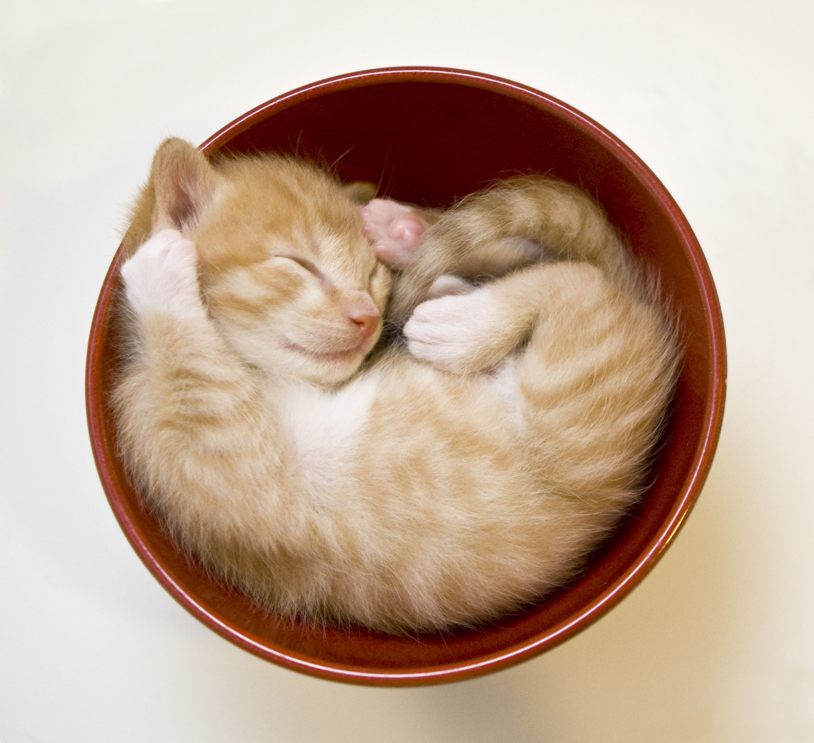

At first I thought about doing something simple like making a page about my life. It seemed like the easiest thing to do with the current assignment. My ending thoughts for that idea came through the fact that my life is pretty specific. Don't get me wrong I have lots of stories, but most of them aren't very relatable to people.
So I decided to make this page more ranndom than following stories about my past. I came up with the idea that this page would be about the current assignment. I'd explain my thought process on why I chose what I did while simultaneously completing the assigment.
This assignemnt was actually quite fun to work on. It was strange at first to realize what was possible with just a small amount of code. Using the attributes already in HTML and CSS to manipulate the page however I wanted. I could use custom images, resize them, and then adjust there screen positioning all in a few lines of code.
This assigment has changed my perspective on coding. It didn't seem as simple when I first looked into it, but now I realize it has been made to allow you to minimmize the size of your code to even an extreme extent. All you need is the understanding and willingness to dig for the answer.
As for the cats, they are just here to be fun to look at(and maybe play with?). Nothing super special about why I picked them.